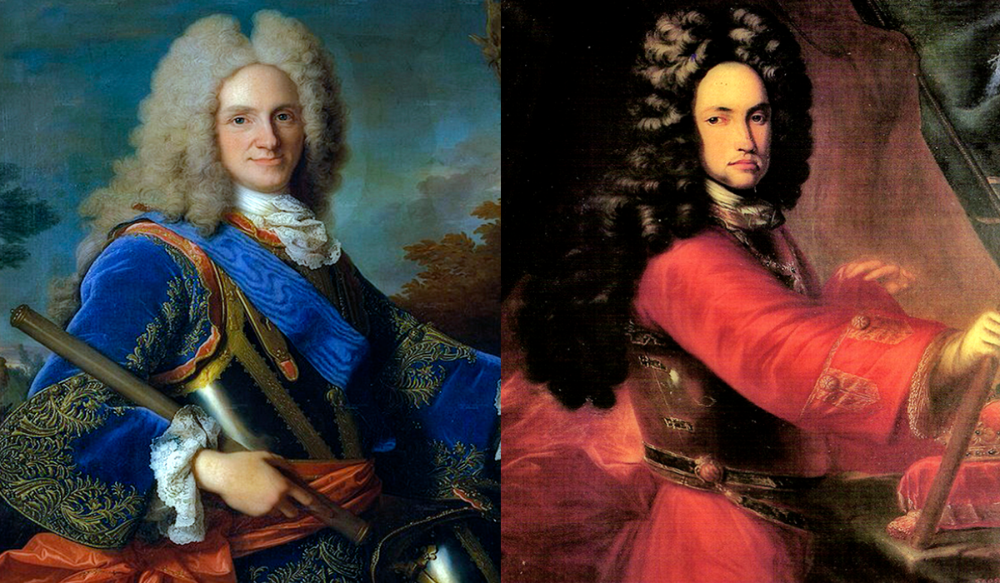
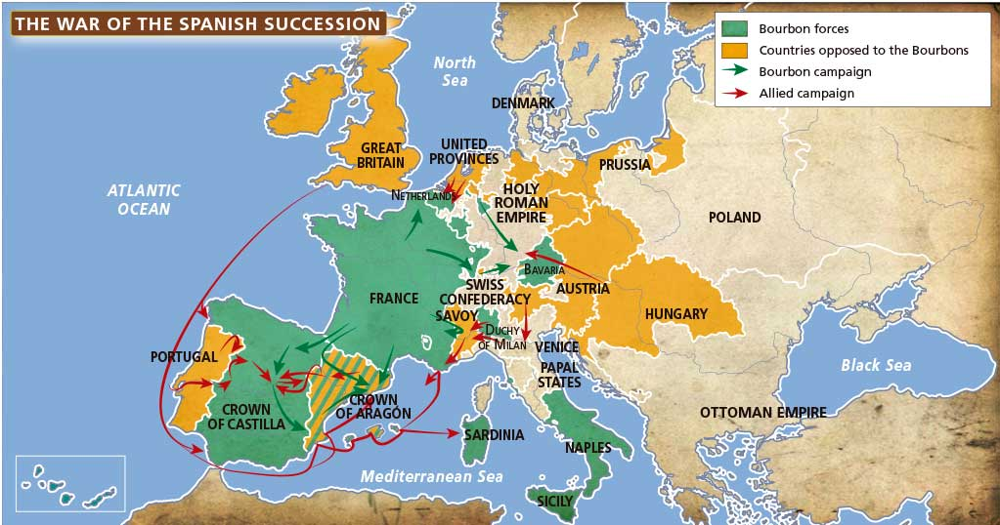
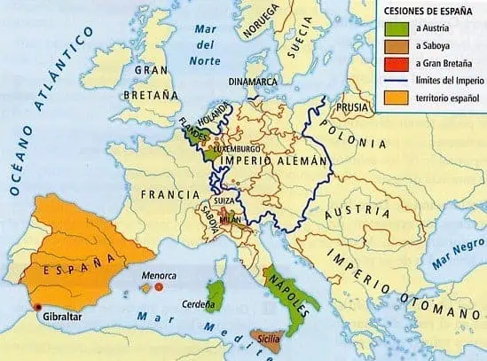
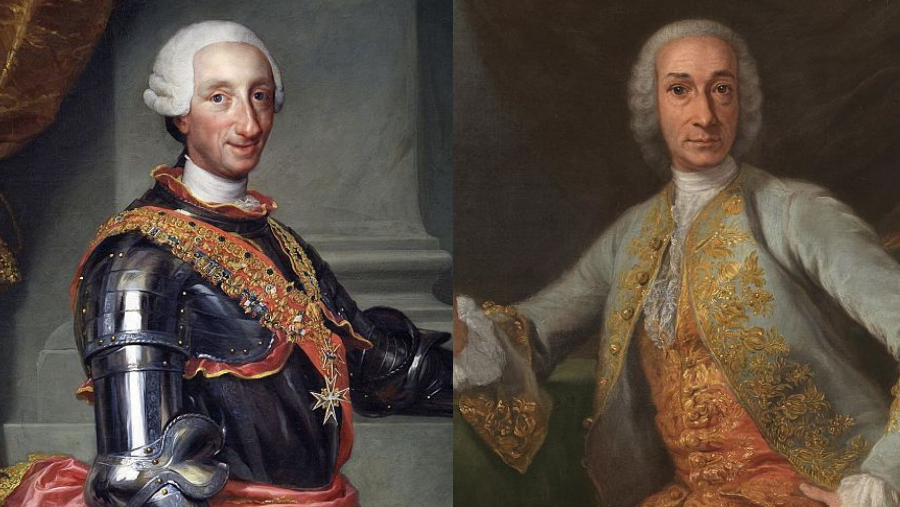
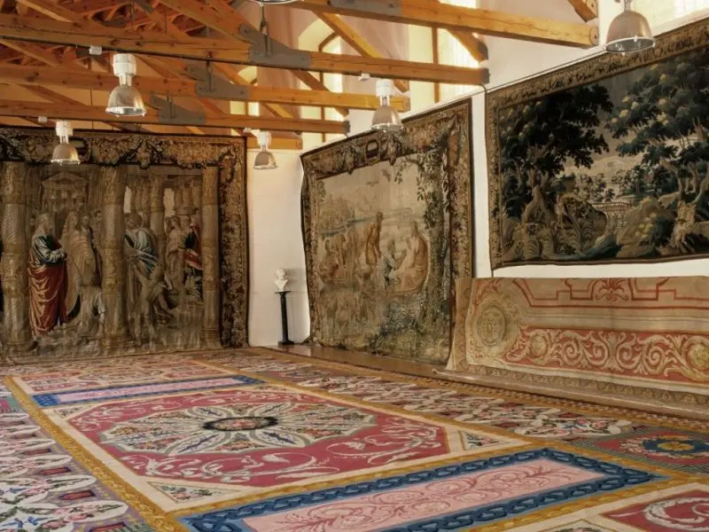

Bloque 4. España en la órbita francesa: el reformismo de los primeros Borbones (1700-1788)
1.1 La guerra de Sucesión (1700-1715) y el Tratado de Utrecht-Rastatt
La muerte de Carlos II (1700) parecía resolver la cuestión sucesoria gracias a su testamento, que dejaba a Felipe de Anjou (nieto del poderoso Luis XIV de Francia) el trono de la Monarquía Hispánica. Sin embargo, las cuestiones sucesorias se complicaron porque esto suponía un cambio de dinastía (de los Austria a los Borbones) y el pretendiente directo, el archiduque Carlos de Austria, no reconoció este testamento. Comienza así una auténtica guerra de carácter internacional: la guerra de sucesión[1].

Se configuran dos bandos claros: a favor de Felipe de Anjou, con Castilla, Navarra y Francia principalmente. Frente a él, los afines al archiduque Carlos, apoyado por territorios peninsulares como Aragón o Cataluña y la Gran Alianza (Austria, Inglaterra, Holanda y Portugal), temerosa de que el acercamiento dinástico entre España y Francia rompiera el equilibrio europeo y creara una nueva y temible superpotencia mundial.
El conflicto (1701-1714) tuvo así una triple dimensión: guerra dinástica (Borbones frente a Austrias), guerra internacional (Francia y España frente a la Alianza) y guerra civil, pues Castilla y Navarra apoyaron mayoritariamente a Felipe, mientras la Corona de Aragón (especialmente Cataluña) se decantó por el archiduque ante el temor del característico centralismo borbónico (eliminar los fueros e instituciones particulares) que ya aplicaban con la monarquía absoluta en Francia.

Felipe de Anjou (Borbón | archiduque Carlos de Austria |
Castilla | Austria |
Francia | Inglaterra* |
Navarra | Holanda |
Portugal |
Inglaterra dejó de apoyar al archiduque Carlos de Austria cuando este ganó el trono del Sacro Imperio Romano Germánico.
Tras la victoria borbónica en Almansa (Albacete) en 1707, el conflicto se resolvió cuando el archiduque Carlos de Austria heredó el trono imperial (1711), lo que hizo cambiar de opinión a la Gran Alianza (Austria, Inglaterra, Holanda y Portugal). Las potencias internacionales vieron con mayor temor la unión del nuevo emperador Carlos VI (el archiduque Carlos) con la Monarquía Hispánica (temido recuerdo porque Carlos V fue unión de Monarquía Hispánica-emperador). Por ello, dejaron de lado al pretendiente Carlos y firmaron la Paz de Utrecht (1713-1715[2]).
Estos tratados reconocieron a Felipe de Anjou como Felipe V de España, pero se estableció:
- La separación definitiva de las coronas española y francesa
- España5 perdió territorios como…
- Los Países Bajos, Milán, Nápoles y Cerdeña, cedidos a Austria,
- Gibraltar y Menorca, cedidas a Gran Bretaña,
- Ventajas comerciales en América para Gran Bretaña (el navío de permiso y el asiento de negros).

En definitiva, el Tratado de Utrecht-Rastatt (también llamado tratados de Utrecht y Rastadt, Paz de Utrecht o Tratado de Utrecht-Rastatt[3]), en la práctica, resultó perjudicial, aunque Felipe V lograra ser reconocido (su reinado fue el más largo de la historia de España, con 45 años), porque materializaba el final de la Monarquía Hispánica[4] al perder la mayoría de territorios europeos. Esto confirmaba que España[5] pasaría a ser una potencia de segundo orden, como una monarquía satélite de Francia (pactos de familia entre España y Francia), alejada de la hegemonía mundial que mantuvo siglos atrás, reducida a mantener su imperio colonial.
1.2 Los Decretos de Nueva Planta y la centralización borbónica
El primer objetivo de Felipe V (amparándose en el "derecho de conquista" por haber ganado la guerra) fue reducir la complejidad administrativa de los múltiples reinos, leyes e instituciones heredada de la Monarquía Hispánica con los Austrias a una sola entidad política, tomando como referencia la Corona de Castilla. Esta reforma se materializó en los Decretos de Nueva Planta, aplicados progresivamente conforme avanzaba la guerra: Valencia y Aragón (1707); Mallorca (1715) y Cataluña (1716). Estos decretos abolieron los fueros e instituciones de los reinos de la Corona de Aragón, que habían apoyado al otro pretendiente, al archiduque Carlos. Los Decretos de Nueva Planta consiguieron:
- Suprimir el gobierno de los consejos por cinco secretarías de despacho (salvando las distancias, cinco ministerios): Estado, Gracia y Justicia, Guerra, Marina e Indias, Hacienda. A partir de 1724 sí se los puede llamar ministros.
- Suprimir sus Cortes y sus Consejos territoriales, quedando únicamente la Corte de Castilla. Se añade la figura de los intendentes (salvando las distancias, como los actuales delegados del gobierno).
- Imponer las leyes y tribunales castellanos (Chancillerías y Audiencias)
- Unificar con el sistema fiscal (recaudación de impuestos) de Castilla (como el catastro en Cataluña).
- La autoridad pasó de los virreinatos a las capitanías generales (poder militar).
- Suprimir las fronteras interiores (eliminando aduanas interiores que recaudaban y enriquecía a los nobles. Por ejemplo, Felipe V redujo el quinto real en 1723 al 10 %, como un diezmo.
- Imponer el castellano como única lengua administrativa (creación de la Real Academia Española en 1713)[6].
- Aprobación de la ley sálica, una ley que prioriza la línea masculina en la sucesión al trono español[7] (doble motivo: evitar conflictos sucesorios como el de Carlos II e imitar la preferencia por el varón que ya existía en Francia).
Explora · Compara · Comprende
Los Decretos de Nueva Planta
Una monarquía, distintos territorios. Compara su organización antes y después de las reformas de Felipe V.
Antes · Monarquía Hispánica (hacia 1700)

- Corona de Castilla
- Territorios de la Corona de Aragón
- Regímenes forales conservados
- Grandes divisiones aproximadas (no provincias ni jurisdicciones exactas)
Pulsa un territorio o su botón para leer la explicación; vuelve a pulsarlo para deseleccionarlo y cerrar la caja. Amplía con + y −; arrastra al ampliar. En móvil puedes separar dos dedos; con ratón, Ctrl + rueda. También puedes usar Tab y Entrar. El desplazamiento de la página sigue disponible fuera del mapa.
Centralización no significa ausencia de divisiones. Según PARES · Catastro de Ensenada, en 1750 las poblaciones de la Corona de Castilla se agrupaban en 22 provincias, diferentes de las actuales. Este dato posterior ayuda a entender la continuidad de las subdivisiones; no representa los límites de 1716.
Claves históricas y límites del esquema
- Navarra, Vizcaya, Guipúzcoa y Álava conservaron sus regímenes forales. Los territorios vascos ya pertenecían a la Corona de Castilla; no eran reinos independientes.
- Utrecht-Rastatt no es Nueva Planta. Los acuerdos de paz de Utrecht (1713) y Rastatt (1714) pusieron fin a la guerra de sucesión española. Gibraltar y Menorca fueron cedidos a Gran Bretaña en Utrecht (1713), no por los Decretos de Nueva Planta. Menorca se representa como contexto y no como territorio reorganizado por Felipe V.
Referencia histórica: Los Decretos de Nueva Planta · Educación de Navarra. Cartografía: elaboración propia con datos del INE (2018), distribuidos por geoBoundaries (compilación de 2023); países vecinos con Natural Earth (dominio público). Condiciones de reutilización del INE. Límites agregados y simplificados para este material educativo, sin respaldo institucional. Abrir el mapa vectorial inicial.
Resultado de los Decretos de Nueva Planta: Aragón, Valencia, Mallorca y Cataluña pierden sus fueros por el derecho de conquista. Solo lo mantienen Navarra y las provincias vascas (Vizcaya, Guipúzcoa, Álava) por haber sido aliados de Felipe V en la guerra.
El resultado fue la uniformidad centralista de todo el territorio según el modelo castellano, salvo Navarra y las provincias vascas[8], que conservaron sus fueros e instituciones por su fidelidad a Felipe V durante la contienda. Con ello se liquidó el sistema polisinodial de los Austrias (de crear múltiples consejos), se aseguró el poder absoluto del rey, el centralismo borbónico y se sometió a todos los súbditos a un solo ordenamiento jurídico, desapareciendo los antiguos reinos (excepto Navarra) y creándose unas Cortes únicas (las de Castilla).
Explora · Compara · Comprende
La organización política: de los Austrias a los Borbones
Comparativa de los siglos XVI–XVII y XVIII
Monarquía Hispánica de los Austrias
Gobierno central
Rey y sistema polisinodial
- Consejo de Castilla
- Consejo de Aragón
- Consejo Real de Navarra
- Consejo de Indias
- Consejo de Italia
- Consejo de Flandes y de Borgoña
- Consejo de Portugal
- Consejo de Estado
- Consejo de Guerra
- Consejo de Hacienda
- Consejo de la Suprema y General Inquisición
- Consejo de Órdenes
- Consejo de Cruzada
- Cámara de Castilla
Administración territorial y local
Virreinatos peninsulares
- Aragón
- Cataluña
- Valencia
- Navarra
Virreinatos italianos
- Nápoles
- Sicilia
- Cerdeña
Corregimientos y municipios
- Corregimiento de Madrid
- Concejos
- Cabildos
Administración judicial
Chancillerías
- Valladolid
- Granada
Audiencias
- Aragón
- Cataluña
- Valencia
Gobierno de América
Virreinatos americanos
- Nueva España (1535)
- Perú (1542)
Audiencias y cabildos
- Audiencia de México
- Audiencia de Lima
- Cabildo de México
- Cabildo de Lima
Comercio americano
- Casa de Contratación de Sevilla
Monarquía borbónica
Gobierno central
Rey y secretarías de Estado y del Despacho
- Estado
- Guerra
- Marina
- Hacienda
- Justicia
Consejos y Cortes
- Consejo de Castilla
- Consejo de Indias
- Cortes del reino
Coordinación del gobierno
- Junta Suprema de Estado (1787)
Administración territorial y local
Capitanías generales
- Aragón
- Cataluña
- Valencia
- Mallorca
Intendencias
- Valencia
- Sevilla
- Galicia
Corregimientos
- Madrid
- Zaragoza
- Barcelona
Virreinatos peninsulares
- Navarra
Administración judicial
Audiencias
- Aragón
- Cataluña
- Valencia
- Mallorca
Chancillerías
- Valladolid
- Granada
Gobierno de América
Virreinatos americanos
- Nueva España
- Perú
- Nueva Granada (1717 / 1739)
- Río de la Plata (1776)
Intendencias
- México
- Puebla
Audiencias y cabildos
- Audiencia de México
- Audiencia de Lima
- Cabildo de México
- Cabildo de Lima
Comercio americano
- Casa de Contratación de Cádiz (1717–1790)
Pulsa los títulos para ver los ejemplos · Tab y Entrar.
Fuentes: Bloque 3 · Referencia visual · Consejos · PARES: Italia, Aragón.
1.3 La reforma de la administración y el absolutismo borbónico
La voluntad de imponer un modelo centralizado y de fortalecer el absolutismo llevó a una reforma integral de la administración de la Corona. Al gobierno, en manos de cinco secretarios de despacho (Estado, Guerra, Gracia y Justicia, Marina e Indias, y Hacienda) se suma, a finales de siglo, la Junta Suprema de Estado, reunión formal y regular de los secretarios (antecedente del actual Consejo de Ministros que se reúne semanalmente). El secretario de Estado asumía el papel de coordinador como un verdadero primer ministro (caso del marqués de la Ensenada bajo Fernando VI o el conde de Floridablanca bajo Carlos III y Carlos IV).
Tras un efímero reinado de Luis I (menos de un año, fallecido por enfermedad) y una vuelta a Felipe V, fue sucedido por Fernando VI. Su nuevo gobierno se caracterizó por la centralización borbónica, por reducir frentes bélicos para relajar el gasto económico y la continuidad en las reformas en Hacienda (catastro de Ensenada[9]) y la flota naval, con el objetivo de tener un mejor control de las colonias americanas.
- Catastro de Ensenada: bajo Fernando VI, el marqués de la Ensenada hizo un amplísimo registro de las propiedades agrarias de toda España (Catastro de Ensenada), para que el Estado borbónico pudiera estimar las propiedades existentes y los impuestos que debía recaudar (salvando las distancias, como la actual Declaración de la Renta que siempre se inicia en abril).
Sin embargo, uno de los principales contrapesos que desafió al absolutismo borbónico fue la Iglesia. El rey aplicó una férrea política de regalismo (defensa de la autoridad y las prerrogativas del rey sobre la Iglesia española). Aunque Fernando VI logró firmar el ventajoso Concordato de 1753 con la Santa Sede (el papado), las relaciones fueron tensionándose hasta el motín de Esquilache (1766).
1.3.1 El motín de Esquilache (1766)
Las causas del motín de Esquilache (marzo de 1766 en Madrid, bajo el reinado de Carlos III) se dividen en motivos económicos, sociales, políticos y el detonante inmediato:
- Subida del precio del pan[10], lo que provocó que el alimento básico de las clases populares escaseara. Esto generó una situación de hambre y desesperación.
- Subida de alquileres e impuestos: las reformas urbanas y de alumbrado público en Madrid (Carlos III apodado “el mejor alcalde de Madrid”) se financiaron a través de cargas que afectaron a los propietarios, repercutieron en los inquilinos e inflaron los alquileres[11].
- Sentimiento de rechazo hacia ministros extranjeros. El propio Carlos III, que fue rey de Nápoles antes de serlo en España, se rodeó de colaboradores y ministros de origen italiano (como el propio Esquilache o Grimaldi). Parte de la nobleza mostró un fuerte rechazo hacia su protagonismo de figuras no españolas (xenofobia).
- Oposición de los privilegiados: parte de la nobleza y del clero (entre ellos los jesuitas, a quienes luego se acusó de instigar la revuelta) alimentaron el descontento popular por perder cuotas de poder e influencia frente a las reformas del monarca.
El propio detonante (excusa) fue el edicto de capas y sombreros, que Esquilache proclamó para prohibir el uso de la capa larga y el sombrero de ala ancha (el chambergo), obligando a sustituirlos por la capa corta y el sombrero de tres picos. Esto desató una potente ola de protestas, interpretadas por sectores de la población como una imposición tiránica y Carlos III acusó de este motín a los jesuitas.
Si bien el motín de Esquilache había sido el aparente antecedente de la expulsión de los jesuitas (1767), el motivo de trasfondo era un choque directo con el regalismo borbónico. La orden jesuita tenía un inmenso poder, monopolizaba la enseñanza de las élites, acumulaba grandes riquezas y, sobre todo, tenía un cuarto voto de obediencia directa al Papa, lo que resultaba incompatible con el poder absoluto del rey.

1.3.2 Segunda etapa de Carlos III (1759-1788): mayor reformismo
Entre las consecuencias de este motín, además de la expulsión de los jesuitas, hay cierta debilidad de Carlos III y este cede a las presiones nobiliarias: cesa al ministro Esquilache. Sin embargo, lejos de mostrar debilidad, el rey retomó la iniciativa nombrando a ilustrados españoles (el conde de Floridablanca, el conde de Aranda o el conde de Campomanes). Su segunda etapa de reinado se caracterizó por un profundo reformismo:
- Disminuir los privilegios de la nobleza y el clero, en línea con la tendencia del Estado unitario centralizado.
- Que el Estado prime sobre la Iglesia (regalismo).
- Reforma en la educación primaria, estudios universitarios, enseñanzas medias, creación de escuelas de artes y oficios[12].
- Interés en desarrollar la economía.
- Mayor productividad del sector agrícola (fisiocracia), introducción de nuevos cultivos como la patata y el maíz, grandes obras de canales para el regadío (canal de Castilla y canal de Aragón[13]). Además, en esta línea de analizar el campo, se evidenció el problema de las improductivas tierras amortizadas o "manos muertas" de la Iglesia, encargándose a Jovellanos el célebre proyecto de ley agraria (cuyo intento de reforma acabaría fracasando por la oposición de la nobleza).
- Recorte de los privilegios del Honrado Concejo de Mesta (todavía existía).
- Colonización de nuevas tierras y fundación de pueblos en Sierra Morena (para aumentar el área cultivada).
- Creación de las Reales Fábricas (manufacturas reales de artículos de lujo, como tapices, cristal, porcelana o naipes; algunas de ellas siguen existiendo en la actualidad).

- Creación del primer banco nacional: el Banco Nacional San Carlos (antecedente del actual Banco de España).
- Imposición de aranceles a manufacturas extranjeras (proteccionismo).
- Liberalización del comercio. Los decretos de libre comercio con América (1765, 1778) abolieron el monopolio portuario de Sevilla-Cádiz y rebajaron los impuestos aduaneros para fomentar la exportación de manufacturas españolas y la importación de materias primas americanas (azúcar, cacao, cuero, etc.), mientras que la plata y el tabaco siguieron bajo un estricto control y gravamen fiscal de la Corona.
- Creación de las Sociedades Económicas de Amigos del País[14] (instituciones de carácter ilustrado que pretendían analizar los problemas económicos locales y fomentar la educación y productividad de campesinos y artesanos).
1.4 El “Siglo de las Luces”: la Ilustración en España
El siglo XVIII es conocido como el “Siglo de las Luces”[15] por la difusión de la Ilustración[16], un movimiento ideológico y cultural europeo que confiaba en la razón, la ciencia y la educación como instrumentos para mejorar las sociedades, el gobierno de los Estados, progresar hacia una sociedad con menor peso de los estamentos (primacía de los privilegiados: nobleza y clero), potenciar la educación pública, ciencia[17] y el aumento de la productividad. Sus rasgos principales fueron el progreso científico, la crítica a la sociedad estamental y la búsqueda de la felicidad social.
En España, la Ilustración llegó décadas más tarde y estuvo fuertemente condicionada por el peso de la Iglesia y la Inquisición, que actuaron como un freno a la difusión de las ideas políticas ilustradas (como la separación de los tres poderes de Montesquieu). Por ello, la Ilustración española fue más católica y reformista que revolucionaria. Se manifestó principalmente en el terreno económico, educativo y cultural. Sus grandes promotores (desde pioneros como el padre Feijoo[19] hasta Jovellanos o Campomanes) impulsaron:
- Creación de las reales academias (la RAE, la de Historia o la de Bellas Artes) para estandarizar y proteger la cultura.
- Desarrollo de las Sociedades Económicas de Amigos del País para aplicar la ciencia y la técnica a la economía local.
- Reforma de las universidades, el impulso de la prensa y la financiación de expediciones científicas (como la expedición de Malaspina[18]).
Su legado, aunque minoritario y elitista, especialmente en España, preparó el terreno ideológico para las transformaciones liberales del siglo XIX; en otras palabras, es uno de los antecedentes (causas) más importantes para entender el convulso y revolucionario siglo XIX.
1.5 El despotismo ilustrado y Carlos III
En línea con la Ilustración, ante la reticencia de los monarcas por adoptar todas las medidas de progreso y libertad social, el absolutismo encontró una cómoda posición intermedia: el despotismo ilustrado. Este fue un modelo político europeo del siglo XVIII que combinaba el poder absoluto del rey con la promoción de tímidas reformas ilustradas para la mejora de la economía, la cultura y la sociedad. Su objetivo era modernizar el país y mejorar el bienestar del pueblo, pero sin permitir su participación política, lo que se resume en su célebre lema: “Todo para el pueblo, pero sin el pueblo”.
En España, su máximo exponente fue Carlos III (1759-1788), quien se rodeó de ministros ilustrados (Floridablanca, Campomanes, Aranda o Jovellanos) para impulsar el ambicioso programa reformista analizado anteriormente:
- Sometimiento de la Iglesia al Estado a través del regalismo y la expulsión de los jesuitas (1767).
- Fomento de la economía: impulsando la agricultura, el libre comercio colonial y la creación de las Reales Fábricas.
- Dignificación del trabajo: mediante la Real Cédula de 1783, que declaraba "honrosos" los oficios manuales y mecánicos, permitiendo a la nobleza ejercerlos sin perder su estatus.
No obstante, estas reformas chocaron con la resistencia de los grupos privilegiados (nobleza y clero) y con la desconfianza popular, como demostró el motín de Esquilache (1766). El reformismo ilustrado fue, en definitiva, un intento de modernizar el país sin cambiar los fundamentos de desigualdad del Antiguo Régimen.
Carlos III murió en 1788, dejando el trono a su hijo, Carlos IV, en esta tendencia del despotismo ilustrado sin saber que, un año después, estallaría en el país vecino una de las mayores revoluciones en la historia de la humanidad: la Revolución francesa.
10-12 líneas cada una. Total aproximado entre las dos, 20-24 líneas.
Ejemplos de preguntas cortas del bloque 4
España en la órbita francesa: el reformismo de los primeros Borbones (1700-1788)
1. ¿Con qué monarca comienza a reinar en España la Casa de Borbón a comienzos del siglo XVIII? Explique las causas de la guerra de Sucesión española.
(Debe incluir: Felipe V; muerte sin descendencia de Carlos II en 1700; testamento a favor de Felipe de Anjou; oposición de la Casa de Austria y de la Gran Alianza —Austria, Inglaterra, Holanda—; temor a la hegemonía francesa; apoyo de Castilla a Felipe V y de la Corona de Aragón al archiduque Carlos; dimensión dinástica, internacional y civil del conflicto).
2. ¿Con qué tratado se pone fin a la guerra de Sucesión española? Explique brevemente las consecuencias de dicho tratado.
(Debe incluir: Tratado de Utrecht-Rastatt (1713-1715); reconocimiento de Felipe V como rey de España; separación definitiva de las coronas española y francesa; cesión a Austria de los Países Bajos, Milán, Nápoles y Cerdeña; cesión a Gran Bretaña de Gibraltar y Menorca; ventajas comerciales británicas en América —navío de permiso y asiento de negros—; España como potencia de segundo orden).
3. ¿Qué rey firmó los decretos de Nueva Planta? Explique brevemente en qué consistieron dichos decretos.
(Debe incluir: Felipe V; decretos de 1707 —Valencia y Aragón— y 1716 —Cataluña y Mallorca—; abolición de fueros e instituciones de la Corona de Aragón; supresión de sus Cortes y Consejos; imposición de las leyes, tribunales y fiscalidad de Castilla —catastro—; capitanes generales e intendentes; imposición del castellano como lengua administrativa; excepción de Navarra y provincias vascas por su fidelidad a Felipe V).
4. ¿Qué nombre reciben los decretos que abolieron los fueros de los territorios de la antigua Corona de Aragón? Explique brevemente en qué consistieron dichos decretos y su importancia histórica.
(Debe incluir: Decretos de Nueva Planta; abolición del sistema foral de la Corona de Aragón; uniformidad jurídica, administrativa y fiscal según el modelo castellano; fin del sistema polisinodal de los Austrias; fortalecimiento del absolutismo y del poder del rey; desaparición de los antiguos reinos salvo Navarra; creación de unas Cortes únicas y de un solo derecho).
5. ¿A qué reinado corresponde el motín de Esquilache? Defina el concepto de despotismo ilustrado.
(Debe incluir: reinado de Carlos III; motín de Esquilache de 1766 como revuelta popular en Madrid contra las medidas del ministro; definición de despotismo ilustrado como combinación de absolutismo monárquico y reformas ilustradas; lema “Todo para el pueblo, pero sin el pueblo”; modernización del país sin participación política del pueblo).
6. ¿Qué dinastía impulsó la creación de las reales fábricas en el siglo XVIII? Explique brevemente las reformas económicas emprendidas por los monarcas ilustrados.
(Debe incluir: dinastía Borbón; reales fábricas como manufacturas reales de artículos de lujo para reducir importaciones; reformas agrarias —limitación de la Mesta, obras de regadío, colonización de Sierra Morena, nuevos cultivos—; catastro de Ensenada; Banco de San Carlos (1782); compañías de comercio; decreto de libre comercio con América (1765 y 1778); fracaso de la desamortización de mayorazgos y manos muertas).
7. ¿Qué dinastía reinaba en España durante el denominado Siglo de las Luces? Explique el porqué de esta denominación y las características del movimiento ideológico y cultural al que hace referencia.
(Debe incluir: dinastía Borbón; denominación por la difusión de la Ilustración; confianza en la razón y la ciencia; fe en el progreso; crítica al Antiguo Régimen —absolutismo y sociedad estamental—; defensa de la educación y la tolerancia; en España, Ilustración condicionada por la Iglesia y la Inquisición; Sociedades Económicas de Amigos del País; ilustrados como Feijoo, Jovellanos, Campomanes y Floridablanca).
8. ¿Qué rey del siglo XVIII encarnó mejor el modelo del despotismo ilustrado en España? Explique brevemente las medidas reformistas llevadas a cabo durante su reinado.
(Debe incluir: Carlos III; ministros ilustrados —Floridablanca, Campomanes, Aranda, Jovellanos—; regalismo y expulsión de los jesuitas (1767); reformas económicas —reales fábricas, libre comercio, reformas agrarias—; fomento de la educación y de las Sociedades Económicas de Amigos del País; motín de Esquilache (1766); reformismo sin cambio del sistema político).
9. Explique brevemente las medidas más relevantes emprendidas por los monarcas ilustrados para el desarrollo de la agricultura.
(Debe incluir: limitación de los privilegios de la Mesta; obras de regadío —Canales de Castilla y de Aragón—; colonización de nuevas tierras —Sierra Morena—; introducción de nuevos cultivos —maíz, patata—; proyecto de ley agraria de Jovellanos; denuncia del mayorazgo y de las tierras amortizadas o manos muertas; fracaso de la desamortización; persistencia del atraso agrario).
10. ¿Qué monarca español firmó el Tratado de Utrecht-Rastatt? Explique brevemente las causas de la guerra que los originaron.
(Debe incluir: Felipe V; muerte sin descendencia de Carlos II; doble candidatura —Felipe de Anjou y archiduque Carlos—; temor europeo a la hegemonía francesa; apoyo de Castilla a Felipe V y de la Corona de Aragón al archiduque; dimensión dinástica, internacional y civil del conflicto; victoria borbónica en Almansa (1707) y retirada de los aliados tras la herencia imperial de Carlos).
11. ¿Tras qué conflicto armado iniciaron su reinado en España los Borbones a comienzos del siglo XVIII? Explique las consecuencias de dicho conflicto.
(Debe incluir: guerra de Sucesión española (1702-1715); conflicto dinástico, internacional y civil; Tratado de Utrecht-Rastatt; reconocimiento de Felipe V; separación de las coronas española y francesa; pérdidas territoriales —Gibraltar, Menorca, Países Bajos, Milán, Nápoles, Cerdeña—; concesiones comerciales a Gran Bretaña; conversión de España en potencia de segundo orden).
12. ¿Qué nombre reciben los decretos que abolieron los fueros de los territorios de la antigua Corona de Aragón? Explique brevemente las reformas en la Administración emprendidas bajo la dinastía borbónica a lo largo del siglo XVIII.
(Debe incluir: Decretos de Nueva Planta; reforma de la administración central —secretarios de Despacho, Junta Suprema de Estado, Consejo de Castilla—; reforma territorial —provincias, audiencias, capitanías generales, intendentes, corregidores—; regalismo y expulsión de los jesuitas; reformas económicas —catastro de Ensenada, Banco de San Carlos, reales fábricas, libre comercio—; absolutismo y centralización).
13. ¿Quiénes eran los grupos privilegiados? Explique brevemente las características de la sociedad estamental.
(Debe incluir: nobleza y clero; sociedad dividida en tres estamentos —nobleza, clero y tercer estado—; desigualdad por nacimiento; privilegios sociales, económicos y jurídicos; exención fiscal; propiedad amortizada —mayorazgos y manos muertas—; inmovilidad social; burguesía marginada y receptiva a las ideas ilustradas).
14. ¿Con qué país se firmaron los Pactos de Familia? Resuma en qué consistieron estos pactos y sus consecuencias.
(Debe incluir: con Francia; alianza entre las dos ramas de la casa de Borbón; tres pactos firmados a lo largo del siglo XVIII; apoyo español a Francia en conflictos europeos y coloniales; recuperación de territorios en Italia —Nápoles, Parma, Sicilia—; consecuencias negativas en el comercio colonial —pérdida de La Habana y Manila en la guerra de los Siete Años—; subordinación de la política exterior española a los intereses franceses).
15. ¿Qué dinastía impulsó reformas en la agricultura en el siglo XVIII? Explique brevemente las medidas más relevantes emprendidas por los monarcas ilustrados para el desarrollo de esta actividad económica.
(Debe incluir: dinastía Borbón; limitación de la Mesta; obras de regadío —Canales de Castilla y de Aragón—; colonización de Sierra Morena; introducción de nuevos cultivos —maíz, patata—; informe sobre la ley agraria de Jovellanos; denuncia del mayorazgo y de las manos muertas; fracaso de la desamortización y persistencia del atraso agrario).
16. ¿Cómo se conoce el modelo político del rey Carlos III? Explique brevemente las medidas reformistas llevadas a cabo durante su reinado.
(Debe incluir: despotismo ilustrado; ministros ilustrados —Floridablanca, Campomanes, Aranda, Jovellanos—; regalismo y expulsión de los jesuitas (1767); reformas económicas —reales fábricas, libre comercio, reformas agrarias, Banco de San Carlos—; fomento de la educación y de las Sociedades Económicas de Amigos del País; motín de Esquilache (1766); reformismo sin cambio del sistema político).
17. ¿Dónde se encontraba la Casa de Contratación? Explique en qué consistió la liberalización del comercio colonial.
(Debe incluir: en Sevilla, trasladada después a Cádiz; monopolio comercial centralizado en un solo puerto; decretos de libre comercio de 1765 y 1778; apertura del comercio con América a más puertos peninsulares; aumento de los intercambios y de la recaudación fiscal; fin del monopolio Sevilla-Cádiz; impulso de la economía colonial y peninsular).
18. ¿Qué es el despotismo ilustrado? ¿Quién es considerado el principal monarca ilustrado de España y por qué?
(Debe incluir: definición de despotismo ilustrado como combinación de absolutismo y reformas ilustradas; lema “Todo para el pueblo, pero sin el pueblo”; Carlos III como principal monarca ilustrado; ministros ilustrados; regalismo y expulsión de los jesuitas; reformas económicas, educativas y culturales; motín de Esquilache; modernización sin cambio del sistema político).
Notas y referencias
[1] La RAE establece que debe ir en minúsculas tanto “guerra de sucesión” https://x.com/RAEinforma/status/2015685698251100622 como “guerra de sucesión española” https://x.com/RAEinforma/status/1824113960473215206
[2] “Paz de Utrecht” con mayúsculas, según la RAE: https://x.com/RAEinforma/status/1950456175289401551
[3] En realidad, la Paz de Utrecht tuvo varios tratados y el proceso de reconocimiento de Felipe V y pacificación fue especialmente complejo, entre 1713 y 1715. Junto al Tratado de Utrecht (ciudad holandesa) también destacaron el Tratado de Raastad (ciudad alemana) o el Tratado de Baden (ciudad suiza).
[4] Según la RAE, debe escribirse en mayúscula, “Monarquía Hispánica” https://x.com/RAEinforma/status/1276094340373319688
[5] Ahora sí podemos hablar de España gracias a las reformas que iniciaron los Borbones (1700-actualidad).
[6] La RAE es una de las principales academias lingüísticas del mundo, centralizadas desde el poder del Estado. Esto no existe en todos los idiomas, como el inglés. Fue fundada en 1713 bajo el lema “Limpia, fija y da esplendor” (purificar el idioma, fijar y difundir su buen uso y enseñanza; y hacer brillar la expresión escrita en español).
[7] Esto será futuro objeto de debate con Fernando VII e Isabel II… Lo veremos en el próximo bloque 5.
[8] Desde el punto de vista histórico, resulta fascinante pensar que SIGUEN EXISTIENDO los fueros de País Vasco y Navarra, así recogidos en la Constitución de 1978, y también parcialmente vigentes por Estados tan profundamente autoritarios como la dictadura de Franco (1936-1975).
[10] En 1765, el marqués de Esquilache liberalizó el comercio de granos, eliminando la tasa (precio topado por el gobierno). Esto provocó la especulación de los acaparadores y una fuerte subida del precio del pan. Salvando las distancias, recuerda las subidas que existen en la actualidad de productos básicos en momentos de crisis (comida, combustible, papel higiénico, vivienda…)
[11] POR FAVOR, no me digáis que no es fascinante el paralelismo con la actualidad. Es increíble cómo se repiten los mismos problemas, incluso siglos después.
[12] Salvando las distancias, son las actuales escuelas de bellas artes y las escuelas de formación profesional.
[13] Fueron obras de ingeniería hidráulica tan colosales que, actualmente, están reconocidas como Bien de Interés Cultural (BIC); en otras palabras, un recurso patrimonial de incalculable valor histórico que el Estado debe conservar, proteger y difundir.
[14] Entre este círculo de nobleza y burguesía ilustrada, destaca la figura de Josefa Amar y Borbón, una de las pocas mujeres en la época que logró romper las barreras de género y fue aceptada como miembro en la Sociedad Económica, llegando a escribir en 1786 una obra fundamental: “Discurso en defensa del talento de las mujeres y de su aptitud para el gobierno y otros cargos en que se emplean los hombres”. En otras palabras, ya encontramos en esta época las primeras críticas del origen de la desigualdad entre hombres y mujeres y las estructuras que fomentan la brecha de género (salvando las distancias, un antecedente en el feminismo español), ante lo que Josefa proponía que la mujer recibiera, desde niña, una educación justa y pública para que pudiera emanciparse, desarrollar habilidades intelectuales y técnicas y vivir con menor dependencia del hombre.
[15] Ambas en mayúsculas, según la RAE, https://x.com/RAEinforma/status/2118682154200707295
[16] En mayúscula, https://x.com/RAEinforma/status/1934690128577843669
[17] Un claro guiño y vuelta al método científico del siglo XVII, donde la razón se impone sobre la fe.
[18] La expedición de Malaspina comenzó en Cádiz y recorrió América (desde Montevideo y el cabo de Hornos hasta Alaska), Filipinas, las Marianas, Nueva Zelanda y Australia. Permitió elaborar cartas hidrográficas, estudios etnográficos, colecciones de historia natural e informes políticos sobre los territorios de las colonias americanas, demostrando que la ruta más eficiente para bordear América era por el sur, atravesando el cabo de Hornos de Chile (no sería hasta 1914 cuando EE. UU. construiría una forma mucho más eficiente: el canal de Panamá).
[19] De acuerdo con las normas de acentuación de la Real Academia Española (RAE), la grafía ortográficamente correcta del apellido es Feijoo, sin tilde, por tratarse de una palabra llana terminada en vocal. No obstante, la variante con tilde (Feijóo) está ampliamente extendida en medios de comunicación y es la utilizada habitualmente por figuras contemporáneas como el político Alberto Núñez Feijóo por motivos de preferencia personal o registro civil.